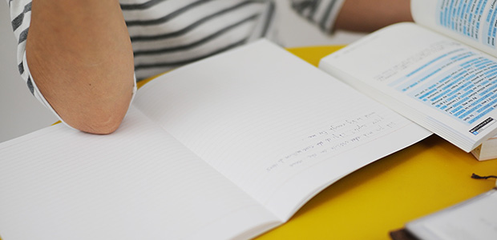

すでに受験シーズンに突入しています。
センター試験はもう終わりましたが、高校入試の方は私立がいま真最中で合否も続々と判明中です。
受験生の皆さんだけでなく、受験生を持つ親御さんたちにとっても何とも重苦しい時期をお過ごしのことと思います。
親の気持ちは「何とか早くこの時期が過ぎてもらいたい。」「どこに決まるにせよ一刻も早く受験が終わって欲しい」というものではないでしょうか。
その気持ちはよく分かります。それくらい親も過酷な時間を経験しているからです。
実際、受験ほど周囲を消耗させるものはありません。
私も30年以上に渡って受験生指導を経験しましたが、塾をつくって5年ほどは毎年のように入試が終わると入院するか、倒れるかしていました。
不思議なもので、受験というのは当事者よりも親など周りの者の方が消耗しやすいものなのかも知れませんね。
というわけで親御さんの心労は十分お察し申し上げますが、それでも「受験」を前向きに考えることは可能であってその辺をお話しいたします。
結果に一喜一憂するな
以前もブログで書いていますが（⇒子どもの迷惑 受験は自立のチャンス！）（⇒15歳のイニシエーション①）（⇒15歳のイニシエーション②）（⇒15歳のイニシエーション③）
受験、とりわけ高校受験は子どもの成長という点で一つのチャンスだということです。
と同時に親にとっても子どもを手放し自立を促す上で大きなきっかけとなる出来事（イベント）なのです。
高校受験が子どもの成長を促すという話は何度もブログで語ってきたので、今回は親の側のあり方という点で話すと、やはり子どもの状態に一喜一憂しないことが重要です。
どのような結果が出ようとも、子どもがその「事実」としっかり向き合うことを促すような親のあり方としてこれは大切なことだと思うのです。
一番良くないのは
受かれば喜ぶ
落ちれば悲しむ
という感情にとらえられてしまうことです。
もちろん親として我が子が合格すれば嬉しいし、不合格になればガッカリするでしょう。
そのような感情が出てくるのは当然です。
ただし、その感情に巻き込まれて我を失ってはいけません。
実はこの時期我々がもっとも警戒するのはこの「一喜一憂」＝アップダウンの問題です。
たとえばよくあるのが、県立が第一志望の受験生が始めにソコソコ難関の私立に受かると、もうそれだけで嬉しくなりハシャいでしまって一気に勉強意欲を失くし、肝心の第一志望の県立に落ちるなどということです。
この逆に受かるはず（？）の私立に落ちて発奮しより難関に受かることもよく見られます。これなど落ちたことで引き締まり集中力がアップしたわけで、不合格でも気持ちは落ち込まず感情的に対処しなかったからこその逆転劇と言えます。
なので親も子どもの状態に一緒に一喜一憂することはなく平常心でいること。子どもが受かっても大はしゃぎせず、落ちても動ぜず入試が全て終了するまではタンタンと子どもを見守ることです。
難しいことかも知れませんが、親子でこの感情のアップダウンに巻き込まれないよう冷静でいることが大切です。
入試に合格したから人生の勝利者になったわけではありません。不合格になったから敗北者になったわけでもありません。
その時は失敗と思っても後から見れば、あの失敗があったからこそ今があるということは珍しいことではない。親なら人生経験上分かっていると思います。
親のあり方3ヶ条
さて、以上の点をふまえて「親のあり方」について考えてみました。
① 子どもを信じる
これも何度か言っていますが、子どもをアレコレ心配することは百害あって一利なしです。心配は子どもに「あなたを信じていないよ！」というメッセージを与えてしまいます。
そうではなく「ウチの子は乗り越える力がある。大丈夫だ！」が正しいメッセージです。
② 手放す
これまた前にも言っていますが、いよいよ子どもを手放すチャンスです。
①で言ったように親は「心配する」ことで子どもを手許に引きとめようとします。
だから 心配をやめる ⇒ 手放す ⇒ 自立する は一連のセットと考えましょう。
「自分は子離れできている」と思っていても入試の直前になると、心配のあまりアレコレ介入してしまう人も多いのです。
この機会に思い切って子どもから距離を置き信頼して任せてしまいましょう。
③子どもに特別何かしてやろうとしない
たとえ子どもがイライラしていたり悩んでいても、この時期は当たり前のことだし何とか乗り越えていくものです。
受験生だからと家族皆が気を使って、ハレモノに触るように扱う必要はありません。
夜食を作ってあげたり朝起こしてあげる必要もありません。頼まれればできる範囲でやってあげれば良いのです。
それなのに過剰に心配して「もし不合格だったらどんな言葉をかければいいの？」とか「励ましの言葉は？」とか気を使わないで下さい。
この時期これらの言葉や心配ほど子どもの神経を逆なでするものはありません。
特別なことはせず普段通りを心がけましょう。
大丈夫です。あなたのお子さんはこの試練を乗り越える力があります。
そして入試が終わったら一段たくましくなった我が子に出会うことができるでしょう！
そのことを信じて安心していて下さい。
次回イベントのご案内
3月22日月イチお話会「2015年度公立高校入試はこうだった」
4月12日月イチお話会「2015年度高校入試総括」
イベント詳細はこちら